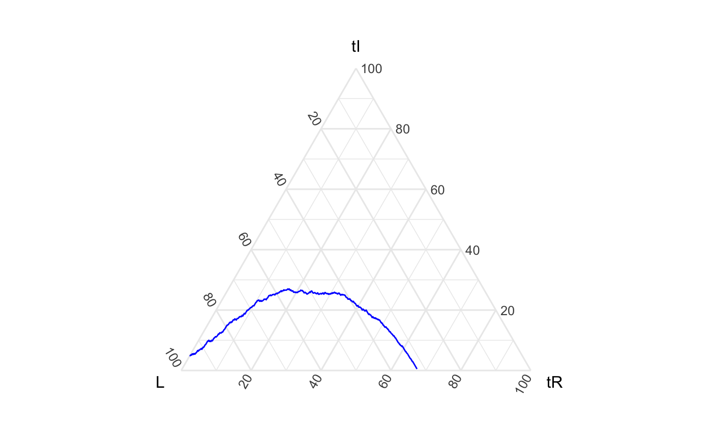
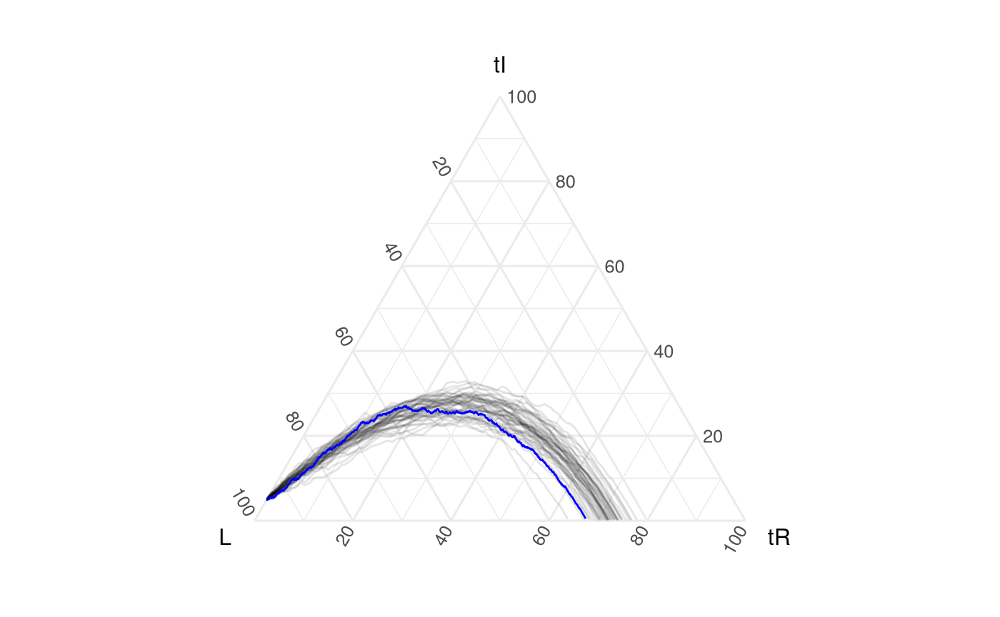
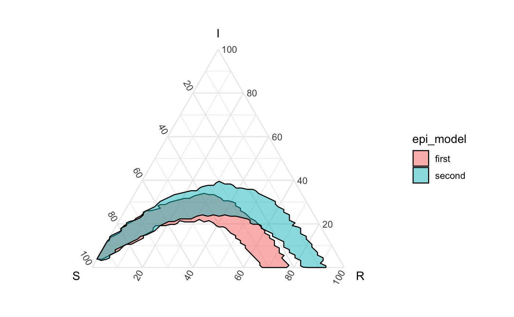

Comparing bands and assessing containment
comparing-bands-and-assessing-containment.Rmd
if(!require(EpiCompare)){
library(devtools)
devtools::install_github("shannong19/EpiCompare")
}
library(EpiCompare)
library(dplyr)
library(tidyr)
theme_set(theme_minimal())Overview
This package provides you the ability to create bands that are high dimensional (say beyond a 3d simplex). It also allows for you to compare bands (using Haussdorff distance) and examine containment of curves.
To motivate these tools we’re actually going to use a with a SIR example (maybe elsewhere do a full high-d example?). Below we’ve generated a pretend_actual_data-set and a set of simulations.
Look at this beautify pretend data. A good peak. We’re able to use geom_aggregate on our data (though we also could have used agents_to_aggregate + geom_path).
set.seed(1)
pretend_actual_data <- EpiCompare::simulate_SIR_agents(
n_sims = 1,
n_time_steps = 1000,
beta = .0099, gamma = .0029,
init_SIR = c(950, 50, 0))
pretend_actual_data %>% ggplot() +
geom_aggregate(aes(y = tI, z = tR),
color = "blue") +
coord_tern() 
# another approach for the same visual
df_single <- pretend_actual_data %>%
agents_to_aggregate(states = c("tI", "tR")) %>%
rename(S = "X0", I = "X1", R = "X2") # visual not run...
ggplot(df_single, aes(x = S, y = I, z = R)) +
geom_path(color = "blue") +
coord_tern()Now, suppose, without having read our paper, you don’t have a proof of @Shannon’s at the top of your head, but you still think the following model fits decently well for the above data.
n_sims <- 50
n_time_steps <- 100
beta <- .1
gamma <- .03
init_SIR <- c(950, 50, 0)
sim50 <- simulate_SIR_agents(n_sims = n_sims,
n_time_steps = n_time_steps,
beta = beta, gamma = gamma,
init_SIR = init_SIR)
df_group <- sim50 %>% group_by(sim) %>%
agents_to_aggregate(states = c("tI", "tR")) %>%
#min_max_time = c(0,100)) %>%
rename(S = "X0", I = "X1", R = "X2") ggplot() +
geom_aggregate(data = sim50, aes(y = tI, z = tR, group = sim),
alpha = .1) +
geom_aggregate(data = pretend_actual_data,
aes(y = tI, z = tR), color = "blue") +
coord_tern()
# again, aggregate version (visual not run):
ggplot(df_group) +
geom_path(aes(x = S, y = I, z = R, group = sim),
alpha = .1) +
geom_path(data = df_single, aes(x = S, y = I, z = R), color = "blue") +
coord_tern()How close is this model?
Great! The visualization looks like you made a good estimate of the SIR model parameters. But how good? Would a 60% prediction interval contain the true epidemic?
We propose to assess this question with containment of the epidemic with a band using 60% of the simulations - specifically the top 60% most globally deep filaments of simulations. (since this looks like a ‘single mode’ style distribution - global depth isn’t that bad.)
We define:
delta_ball_cb <- df_group %>%
arrange(t) %>% # just to be safe
select(-t) %>%
group_by(sim) %>%
grab_top_depth_filaments(conf_level = .6) %>%
create_delta_ball_structure()Which is just a data version (not exactly, but close) to this:
b <- ggplot() +
geom_prediction_band(data = df_group,
aes(x = S, y = I, z = R,
sim_group = as.numeric(sim)),
conf_level = .6, pb_type = "delta_ball") +
geom_path(data = df_single, aes(x = S, y = I, z = R), color = "blue") +
coord_tern()
#> Warning: Ignoring unknown aesthetics: zIs it contained in the above delta ball?
What about a less strigent ruling (maybe a normal prediction band with 90% confidence)?
delta_ball_cb1 <- df_group %>%
arrange(t) %>% # just to be safe
select(-t) %>%
group_by(sim) %>%
grab_top_depth_filaments(conf_level = .9) %>%
create_delta_ball_structure()Comparing another simulation
Suppose your lab has seen an epidemic that has similar characteristics as the current epidemic, and had already build simulations below for such thing:
beta <- .15
gamma <- .05
sim50_2 <- simulate_SIR_agents(n_sims = 50,
n_time_steps = 100,
beta = beta, gamma = gamma,
init_SIR = c(950, 50, 0))
df_group2 <- sim50_2 %>% group_by(sim) %>%
agents_to_aggregate(states = c("tI", "tR")) %>%
rename(S = "X0", I = "X1", R = "X2")Possible visuals
First
df_all <- rbind( df_group %>% ungroup() %>% mutate(sim = as.character(sim),
epi_model = "first"),
df_group2 %>% ungroup() %>% mutate(sim = as.character(sim),
epi_model = "second"))
ggplot() +
geom_prediction_band(data = df_all,
aes(x = S, y = I, z = R, fill = epi_model,
sim_group = as.numeric(sim)), alpha = .5,
conf_level = .9, pb_type = "delta_ball",
grid_size = rep(50, 2)) +
coord_tern()
Second
# visual not run
ggplot() +
geom_prediction_band(data = df_group,
aes(x = S, y = I, z = R,
sim_group = as.numeric(sim)),
color = "blue",
fill = "blue", alpha = .5,
conf_level = .9, pb_type = "delta_ball",
grid_size = rep(50, 2)) +
geom_prediction_band(data = df_group2,
aes(x = S, y = I, z = R,
sim_group = as.numeric(sim)),
color = "red",
fill = "red", alpha = .5,
conf_level = .9, pb_type = "delta_ball",
grid_size = rep(50, 2)) +
coord_tern()Third
# visual not run
df_all <- rbind(df_group %>% ungroup() %>%
mutate(sim = as.numeric(as.character(sim)),
epi_model = "first"),
df_group2 %>% ungroup() %>%
mutate(sim = as.numeric(as.character(sim)),
epi_model = "second"))
ggplot() +
geom_path(data = df_all,
aes(x = S, y = I, z = R, color = epi_model,
group = factor(paste(epi_model,sim))),
alpha = .1) +
coord_tern()Numerical comparison
Define hausdorff distance… tell story…
delta_ball_cb_group2 <- df_group2 %>%
arrange(t) %>% # just to be safe
select(-t) %>%
group_by(sim) %>%
grab_top_depth_filaments(conf_level = .9) %>%
create_delta_ball_structure()hausdorff_dist(delta_ball_cb1, delta_ball_cb_group2)
#> [1] 0.2294748